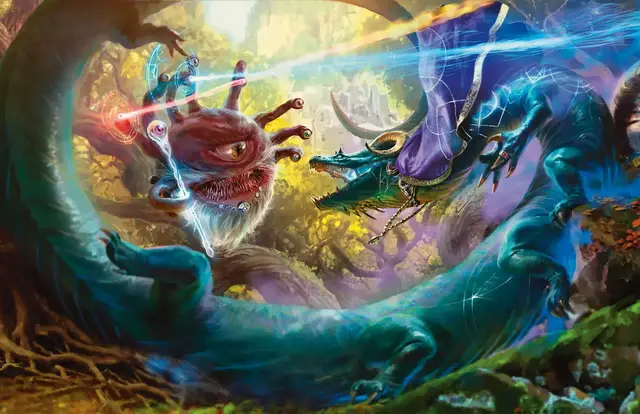

Полное превращение
Shapechange
9 уровень, Преобразование

Время сотворения 1 действие
Дистанция На себя
Компоненты В, С, М (нефритовый обруч, стоящий как минимум 1 500 зм, который вы должны надеть на голову перед накладыванием заклинания)
Длительность Концентрация, вплоть до 1 часа
Классы Волшебник, Друид
Вы принимаете на время действия заклинания облик другого существа. Новый облик может принадлежать существу с показателем опасности не больше вашего уровня. Это не может быть Конструкт или Нежить, и вы должны хотя бы раз видеть такое существо. Вы превращаетесь в среднестатистического представителя таких существ, без уровней классов и умения Использование заклинаний.
Ваши игровые параметры заменяются параметрами выбранного существа, хотя у вас остаётся мировоззрение и значения Интеллекта, Мудрости и Харизмы. Вы также сохраняете все владения навыками и спасбросками, но также получаете те, что есть у нового облика. Если у вас и существа есть совпадающие владения, и указанный для него бонус выше вашего, вы используете бонус существа. Вы не можете использовать легендарные действия и действия в логове нового облика.
Вы принимаете хиты и Кость Хитов нового облика. Когда вы возвращаете свой облик, ваши хиты будут такими же, как до превращения. Если вы возвращаете облик из-за того, что хиты опустились до 0, весь излишний урон переносится на ваш облик. Если излишний урон не опустил ваши хиты до 0, вы не теряете сознание.
Вы сохраняете все преимущества от умений класса, расы и прочих источников, и можете использовать их, при условии, что новый облик физически на это способен. Вы не можете использовать особые чувства (например, тёмное зрение), если их нет и у нового облика. Вы можете говорить только если существо в естественных условиях может говорить.
Когда вы превращаетесь, вы выбираете, свалится ли ваше снаряжение на землю, сольётся с новым обликом или окажется на него надетым. Носимое снаряжение функционирует как обычно. Мастер определяет, сможет ли новый облик использовать тот или иной предмет снаряжения, в зависимости от формы и размера существа. Ваше снаряжение не меняет форму и размер, и снаряжение, которое не может быть надето на новый облик, должно либо свалиться на землю, либо слиться с новым обликом. Слившееся снаряжение не оказывает никакого эффекта.
Пока это заклинание активно, вы можете действием принимать новые облики, подчиняющиеся тем же самым ограничениям, с одним исключением: если у нового облика больше хитов чем у вашего текущего, количество хитов остаётся прежним.